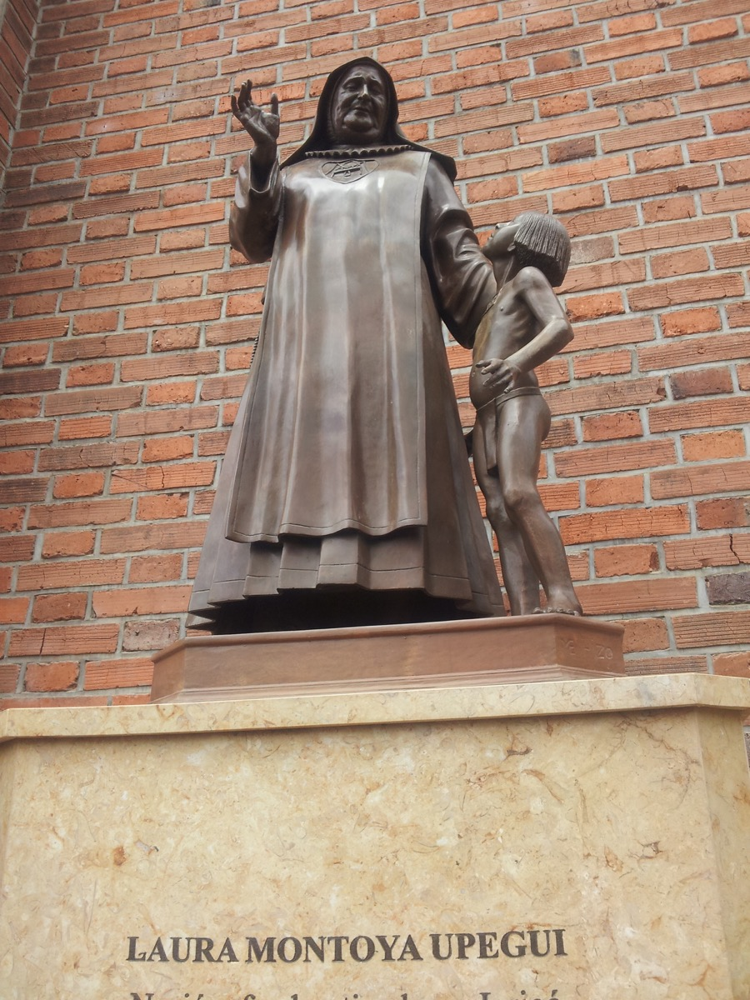
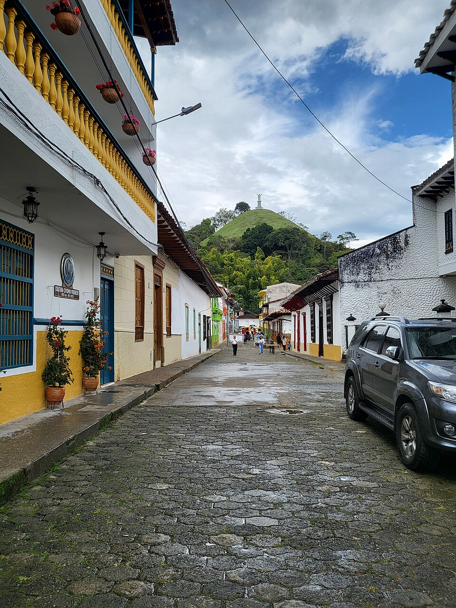
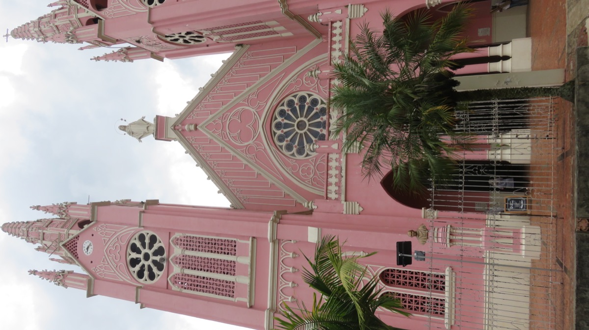
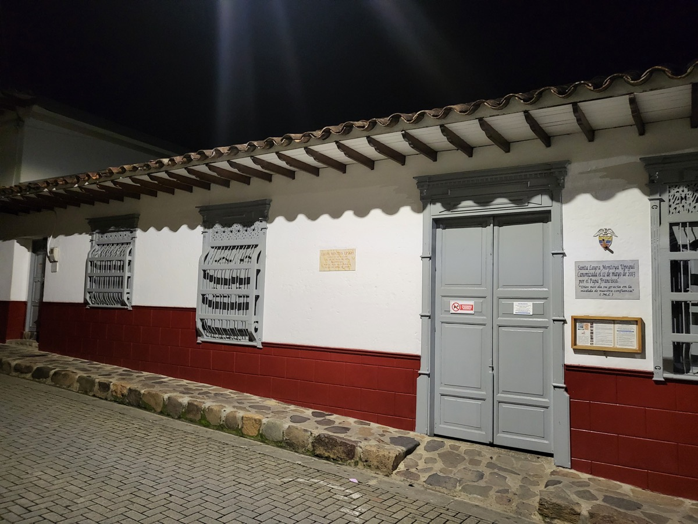

01
01Centro histórico
Recorre el parque principal y las calles cercanas para conocer la arquitectura y la vida cotidiana del pueblo.
Ubicar en el mapa ↗Suroeste antioqueño · Colombia
Calles para recorrer, café para compartir y oficios que cuentan historias. Un destino entre montañas para vivir a tu manera.
Qué conocer en Jericó ↗Conocer su historia ↓¿Tienes un negocio en Jericó? Déjanos tus datos para participar ↗
Conoce el destino
Fundado en 1850, Jericó creció alrededor del comercio, el café y los caminos de los arrieros. Su centro histórico conserva calles, casas y balcones que cuentan parte de esa historia y fue reconocido como patrimonio cultural nacional en 2018.
Jericó también es el lugar donde nació Laura Montoya, conocida como la Santa Madre Laura y primera santa colombiana. Su historia como educadora y misionera forma parte de la identidad del pueblo; su casa natal es uno de los lugares para acercarse a ese legado.

Ideas para tu visita
Elige los lugares que despiertan tu curiosidad y organiza tu recorrido a tu ritmo.
01Recorre el parque principal y las calles cercanas para conocer la arquitectura y la vida cotidiana del pueblo.
Ubicar en el mapa ↗
02Un mirador para contemplar el pueblo y las montañas que lo rodean.
Ubicar en el mapa ↗
03La iglesia rosada es una de las fachadas que llaman la atención al recorrer Jericó y conocer su patrimonio religioso.
Ubicar en el mapa ↗
04Conoce un lugar vinculado a la historia de Laura Montoya y a la tradición religiosa de Jericó.
Ubicar en el mapa ↗Un espacio verde junto al casco urbano para disfrutar de la vegetación y observar aves.
Imágenes redimensionadas; el encuadre puede variar según la pantalla. Las fotografías con licencia CC BY-SA conservan esa licencia.
Conecta las partes de tu viaje
Encuentra cómo moverte, dónde quedarte y comer, qué hacer y los servicios que necesitas. Explora a tu ritmo.
Aún no hay lugares publicados en este directorio.
Ubica los lugares que quieres conocer y consulta con cada sitio sus horarios, condiciones de ingreso y accesibilidad antes de organizar tu recorrido.
Ubicar Jericó en el mapa ↗No hay próximos eventos publicados.
¿Organizas un evento? Hablemos ↗Haz parte de Explorando Lugares
No te quedes por fuera.
Si tienes un hotel, restaurante, bar o tienda, ofreces transporte u organizas recorridos y actividades, queremos conocer tu negocio.
Déjanos tus datos. Te contactaremos para conversar sobre cómo incluir tu negocio en el portal.
Quiero participar ↗